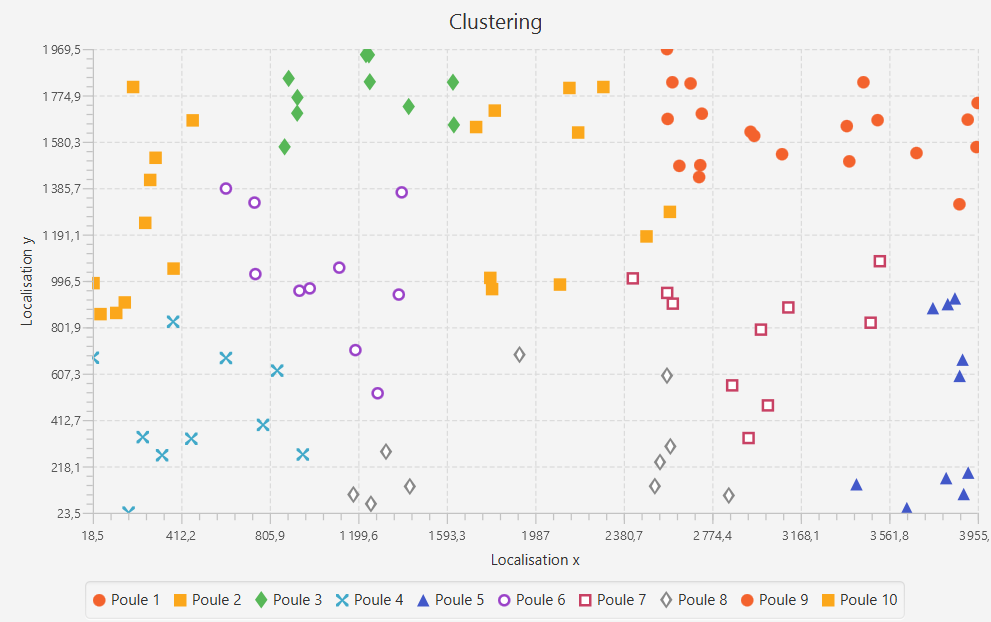
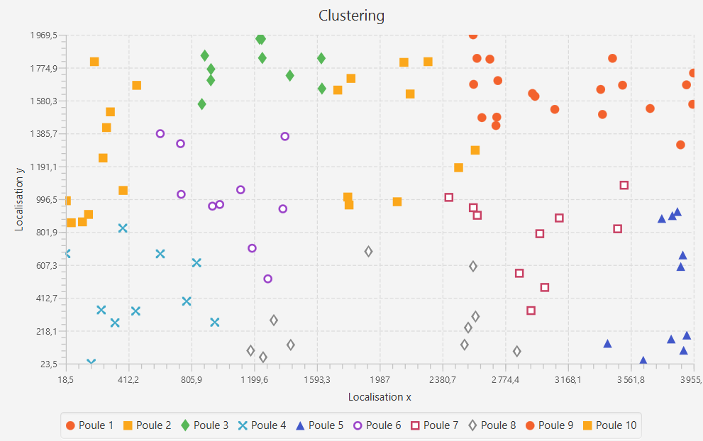
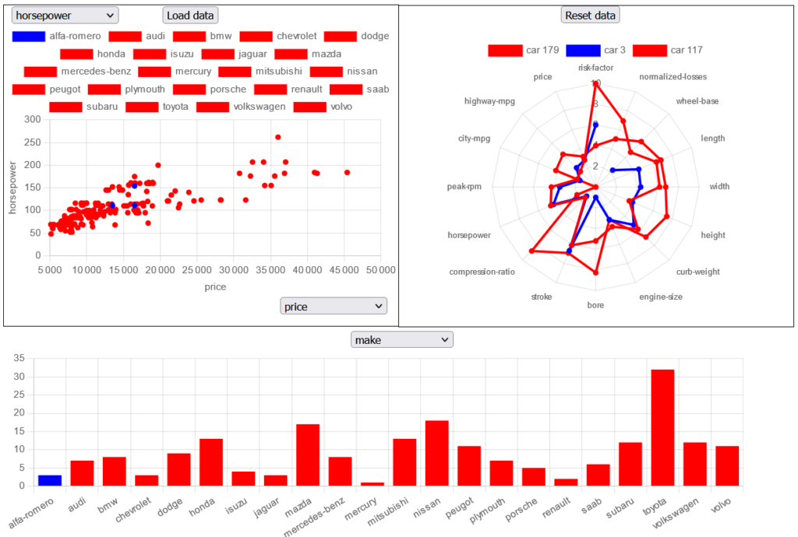

Tetravex
C++
Parallel computing
Parallel computing
Image by GNOME Team - Xhacker Liu, GPL, https://commons.wikimedia.org/w/index.php?curid=8835096

Quizz
Angular
NodeJS
Express.js
MongoDB
NodeJS
Express.js
MongoDB
Image by Octra BondOriginal: Jérôme Paniel - Own work based on: File:Quizz.png., CC BY-SA 3.0, https://commons.wikimedia.org/w/index.php?curid=4466668

Quixxo
About Quixxo
Quixxo is a board game with a winning-goal similar to the one from tic-tac-toe,
having 5 circles or crosses in a row in a line, column or diagonal instead of 3.
What is special about this game is the way players interact with the board. Unlike tic-tac-toe where we simply add our sign on a till that doesn't contain any sign already, in Quixxo, we take a till from a side from the board and we move this till to another side (left, right, top or bottom) which is not the original side, pushing every tills on its way to fill the void let by the taken till.
The till chosen by the player will either remain of the same design (circle or cross) if the till belongs to the playing player or will transform from a non-belonging till to a till belonging to the playing player. A till from the opposite player can not be chosen.
To explain the above example, it's the circle player's turn and the board looks like in step 1.
The player selects the blue in step 2 till and he then can decide to put this till at the place of the yellow ones (the other sides of the board).
He decides to put his till on the right side in step 3 and so to push every tills on its way to the left to fill the void let by the selected till.
The result is that there is now a circle at the place where used to be the cross
and the cross is now one place more to the left.
What is special about this game is the way players interact with the board. Unlike tic-tac-toe where we simply add our sign on a till that doesn't contain any sign already, in Quixxo, we take a till from a side from the board and we move this till to another side (left, right, top or bottom) which is not the original side, pushing every tills on its way to fill the void let by the taken till.
The till chosen by the player will either remain of the same design (circle or cross) if the till belongs to the playing player or will transform from a non-belonging till to a till belonging to the playing player. A till from the opposite player can not be chosen.
Step1
Step2
Step3
Project development
To develop this board game project, I had to check several requirements :
to make at least 3 design patterns including an MVC, having some kind of an AI so a player can play alone against the computer and having some parallel computing.
The programing language I have decided to use was Java because I had already knowledge about basic graphic interfaces using JavaFX that fits well this project.
The programing language I have decided to use was Java because I had already knowledge about basic graphic interfaces using JavaFX that fits well this project.
Design patterns
The patterns I have implemented aside from the MVC pattern are the state pattern which is used here to adapt the code to execute depending on whether a human or an AI is playing
and the command pattern which was used to prepare and execute different actions/movements for tills after a player's click.
Bot
The bot I made that can play against a human is using a Min-Max algorithm. It looks at all the possible movements it can make and what the board will look like after the movement
and each board after a movement is attributed a certain score using hard-coded patterns like for example a line of 3 of the sign of the bot could be worth 10 points, a line of 4 could be worth 100 points and a line of 5 (winning line) 1000 points.
If the human has these patterns, it is then negative points for the board score.
It is possible to choose between two bot difficulties, easy and hard. The easy bot has a depth of 1, meaning that it will only look at what the board will look like after all possible moves,
whereas the hard bot has a depth of 2, meaning that it will look at what could the board possibly look like after a move from itself, then a move from the human and a move from the bot again.
Parallel computing
For the parallel computing part, I've decided to parallelize the AI proccesses that could take a long time without it.
I decided to create a thread for every possible first move from the AI, allowing the AI to play way faster.
Each thread processes the minimum value that the bot can get out of each first move (we choose the minimum because we expect the opponent to play his best moves, meaning that we are looking for what the board can look like in the worst till scenario),
and then the AI will go for the move with the biggest score (the maximum of the minimums). This way, The bot will play the move that will lead to the best "worst" scenario possible.
Report and sources
You can find the project and its report in the following zip file (language: French).
Winer
The project
This project was a group project by pairs about creating a phone application to allow the user to find information about a wine using the bar codes that are on the bottles.
There was no real requirement for this project. The main goal of this one was to teach us (the students) to make our own research and to know how to adapt to a project. We had to think about everything about the application, from the back-end structure to the design, the way people would interact with the app, the language we want to use.
There was no real requirement for this project. The main goal of this one was to teach us (the students) to make our own research and to know how to adapt to a project. We had to think about everything about the application, from the back-end structure to the design, the way people would interact with the app, the language we want to use.
Development
I'm going to detail here only our most important choices for developing the application. For a bigger picture about our project, please download the report down below.
Diagrams
To go through the application development, we had to start by thinking about the application and so we made different diagrams like a usecase one and sequence diagrams.
Usecase diagram for our application (language: French)
Programming language
Then we had to look for a programming language for our application.
For the front-end, among all of our research, we ended up with a few choices like Flutter and Ionic. Because we didn't have any knowledge about Flutter and the dart programming language and that it seemed to take longer to adapt to it, we decided to use Ionic that looked more simple because it uses typescript and we already had knowledge about it.
For the back-end, we had a few choices between NodeJS, Flask and symphony. We decided to go for NodeJS because it has all the functionnalities we needed and it is well documented and a widely spread choice, with a big community around.
For the front-end, among all of our research, we ended up with a few choices like Flutter and Ionic. Because we didn't have any knowledge about Flutter and the dart programming language and that it seemed to take longer to adapt to it, we decided to use Ionic that looked more simple because it uses typescript and we already had knowledge about it.
For the back-end, we had a few choices between NodeJS, Flask and symphony. We decided to go for NodeJS because it has all the functionnalities we needed and it is well documented and a widely spread choice, with a big community around.
Design
For the design of our application, we aimed for something more or less simple because it was not the main core of our application.
The final design was relatively close to our aim.
Sketches for our application (language: French)
Final design of the application (language: French)
Project report
You can find the project's report in the following pdf file (language: French).
Pool Organisor
About the project
The pool organisor project was a group project done by 3 students with a duration of almost a year.
Basically, this project had the aim of looking like a real situation problem, with teachers as our "clients", and acting kind of like if it was a real job.
The project we chose with my group was the pool organisor project, a project where the aim was to build a software that would allow sport competition organizors to create optimized pools according to some requirements, criteria.
Context
In France, sport pools are organized using some criteria, very often the time or distance criteria, to organize and create pools that feel comfortable for every teams.
Unfortunately, it happens that teams complain about how the pools are designed and so, the project is about trying to find new possibilites for pool groups, using more criteria, and trying to satisfy more teams.
Development
This project was separated in two parts, each lasting about 4 or 5 months.
The first part had the aim of understanding the project, finding possible solutions to our problem, thinking about what programming languages would be used, the overall architecture of the project, all this communicating with our clients.
The second part had simply the aim of programming the project, with all what we said and thought about in the first part.
Understanding and thinking about the project
In this part, we had to understand the needs of the project to be able to participate in the thinking process and to make suggestions to the clients.
As this problem looks like a clustering problem, we also had to read about scientific articles to gain knowledge about clusterings and what kinds of solutions already exist.
Among all the solutions we have thought about, we ended up choosing two possibilities that the client would then have the choice to choose in the application.
Greedy algorithm
The first solution would be an often non-optimal solution found by a greedy algorithm.
Greedy algorithms have the aim of looking for a good solution starting from a certain state.
It will try to improve little by little the solution quickly until not finding any improvement anymore unlike a more usual algorithm that would try every possibilites and keep only the best one, the optimal solution.
In our project, the greedy algorithm works like the following :
- Initializing the competition pools by either creating random pools or by already trying to put teams close to each other in the same pool by using some kind of algorithm (in our case we used hierarchical clustering)
- Look if there is any (and if there is look for the best) possible improvement in the competition organization according to some criteria (for example distance).
To do this, we try to substitute every team of the competition with every teams of the competition from other pools, and if the total distance among the competition (calculated by adding every traveled distances among every pools) decreases, we know that we can change the pool of these teams together so we will have a more optimized competition organization.
- If an improvement is found, switch the pool of the 2 teams that lead to the biggest distance decrease.
- Repeat step 2 and 3 until there isn't any switch possible anymore
Linear model
The second solution allows us to find the best solution possible but can be time-consuming : a linear model.
This part was not my doing, it has been made by someone else from my group.
Using for example a distance criteria to improve and some constraints, we were able to think about a linear model that would solve our problem in the best way possible.
This has then been developped using CPLEX.
Programming
For the programming part, I was in charge of the greedy algorithm as well as the display of the final pool organization (chart).
User possibilities
The user can choose how many pools he wants in his competition as well as how many iterations he wants for the algorithm.
As the algorithm doesn't find a perfect solution and depends actually on the initialization, the more there are iterations, the better might be the final solution.
The user also has the choice of adding one criteria : trying to have a more homogeneous distance traveled among every pools but at the cost of the overall distance traveled in the whole competition.
If the user decides to go for this option, the teams inside the pool that had the biggest distance to travel might end up having a lower distance with this option but the teams in other pools might end up with a higher distance.
The aim of this option is to help teams that have a big distance to travel during the competition. The user can also choose to limit by how much the overall distance can decrease.
Example of the greedy algorithm
Here you have an example of what the result of the algorithm can look like.
The first picture shows the result of the algorithm at the first iteration on a dataset of 100 teams.
The second picture shows the result of the algorithm at the first iteration after having made the competition's pool organization more homogeneous.
We can see that this second one looks very unoptimized, that is why we can set a maximum traveled distance decrease (here, 10%). When looking a little bit more into it, we can try to guess what the algorithm did.
Here, it looks like the algorithm tried to decrease the traveled distance inside the 8th pool as more teams are located on the left on the second picture. The teams from this pool seem indeed closer to each other than before.

Examples of greedy algorithm
The difference in the second picture stands mainly in the 8th pool (gray diamonds)
Report and sources
You can find the project and its report in the following zip file (language: French).
- Initializing the competition pools by either creating random pools or by already trying to put teams close to each other in the same pool by using some kind of algorithm (in our case we used hierarchical clustering)
- Look if there is any (and if there is look for the best) possible improvement in the competition organization according to some criteria (for example distance). To do this, we try to substitute every team of the competition with every teams of the competition from other pools, and if the total distance among the competition (calculated by adding every traveled distances among every pools) decreases, we know that we can change the pool of these teams together so we will have a more optimized competition organization.
- If an improvement is found, switch the pool of the 2 teams that lead to the biggest distance decrease.
- Repeat step 2 and 3 until there isn't any switch possible anymore
This part was not my doing, it has been made by someone else from my group. Using for example a distance criteria to improve and some constraints, we were able to think about a linear model that would solve our problem in the best way possible. This has then been developped using CPLEX.
The user also has the choice of adding one criteria : trying to have a more homogeneous distance traveled among every pools but at the cost of the overall distance traveled in the whole competition. If the user decides to go for this option, the teams inside the pool that had the biggest distance to travel might end up having a lower distance with this option but the teams in other pools might end up with a higher distance. The aim of this option is to help teams that have a big distance to travel during the competition. The user can also choose to limit by how much the overall distance can decrease.
The first picture shows the result of the algorithm at the first iteration on a dataset of 100 teams.
The second picture shows the result of the algorithm at the first iteration after having made the competition's pool organization more homogeneous. We can see that this second one looks very unoptimized, that is why we can set a maximum traveled distance decrease (here, 10%). When looking a little bit more into it, we can try to guess what the algorithm did. Here, it looks like the algorithm tried to decrease the traveled distance inside the 8th pool as more teams are located on the left on the second picture. The teams from this pool seem indeed closer to each other than before.

Examples of greedy algorithm
The difference in the second picture stands mainly in the 8th pool (gray diamonds)
The difference in the second picture stands mainly in the 8th pool (gray diamonds)
Tetravex
About Tetravex
Tetravex is a puzzle game with a certain size (the more common is 3x3) where the aim is to have all the pieces on the board.
A piece is a square compound of 4 triangles which each has a number written on it.
For a piece to be able to be put on the board, it needs to have its triangles to have the same numbers as the ones of the opposite sides of the nearby squares.
For example, for a piece to be put on the top left part of the board, it needs to have its right triangle to have the same number as the left triangle of the square to its right. Its bottom triangle also needs to have the same number than the top triangle of the below square. The top and left triangles' numbers don't matter as there is no square above or to the left. Here is an example of a fully solved Tetravex :
For example, for a piece to be put on the top left part of the board, it needs to have its right triangle to have the same number as the left triangle of the square to its right. Its bottom triangle also needs to have the same number than the top triangle of the below square. The top and left triangles' numbers don't matter as there is no square above or to the left. Here is an example of a fully solved Tetravex :
Image by GNOME Team - Xhacker Liu, GPL, https://commons.wikimedia.org/w/index.php?curid=8835096
The project
This project was a smaller one compared to others. The aim was to implement a Tetravex puzzle solver with and without using multi-threading and to compare the results.
Back-tracking algorithm
We had to implement a back-tracking algorithm that would try to put one till after another and if no till could be placed on the board, we will go one stop before and change the till there for another one.
If no solution can be found with a certain till at a specific place, we try with another one again and so on.
Multi-threading
For the Multi-threading part, I decided to go for a simple but efficient multi-threading : creating 1 thread for every pieces of the puzzle.
In each thread, we would then try to put a different piece as the "first" piece of the puzzle (upper left piece).
For example in the first thread we would try to put the piece number 1 on the upper left part and then try to solve the puzzle this way.
The same goes for each thread, the second with the second piece and so on...
If a thread finds a solution for the puzzle, the other threads will be alerted of that and will stop their process as soon as possible so the program can go to the next step.
If a thread finds a solution for the puzzle, the other threads will be alerted of that and will stop their process as soon as possible so the program can go to the next step.
Result
The conclusion I've made from the comparison of the time consumption of the non multi-threaded and the multi-threaded algorithm is that for larger puzzles like the (7x7 or 8x8), the multi-threaded was at least X times faster than the non multi-threaded one, X being the number of the first possible solution found by the non multi-threaded algorithm.
For example, if the first solution found by the algorithm is by using the 4th piece (which was the case in my 8x8 example in my project), the multi-threaded one will then be at least 4 times faster.
Depending on how fast a thread finds the solution, it can even be way more efficient.
For example, if the first solution found by the algorithm is by using the 4th piece (which was the case in my 8x8 example in my project), the multi-threaded one will then be at least 4 times faster.
Depending on how fast a thread finds the solution, it can even be way more efficient.
Report and sources
You can find the project and its report in the following zip file (language: French).
Quizz
About the project
The quizz project was a web application development project with the aim of learning the MEAN stack (MongoDB, ExpressJS, Angular and Node.js).
We had for goal to build a website that would allow the user to play a quizz game and to allow him to create an account in order to save his past games and to compete against the best players.
We had for goal to build a website that would allow the user to play a quizz game and to allow him to create an account in order to save his past games and to compete against the best players.
Development
This project was my first one using Angular, NodeJS and these other tools and was also my first single-page application (SPA) experience.
In this application, the user can start playing to the quizz, see other players' scores and modify his personal information.
He can also see and modify his information as well as see his game history.
As there was no technology choice or no particular decision to take for this project, there is not so much to say about it appart showing a few screens of the design.
Unfortunately, I don't have access anymore to the final rendering of the website because the database had been created by a teacher and has since been deleted so I can only show screens that I took at some point when developing the website.
Website's main page where the user can play the quizz and see other people's scores.
Account information part
Final thought
Even if I don't have a lot to say and show about this project, it was still very interesting as I learnt the basics of the MEAN stack there and got more interested in web developpment from that point on.
Project's Sources
You can find the project sources in the following zip file (language: French).
Compiler
The project
The compiler project was another project I've done in Sweden in Linnaeus University.
The aim of this project was to build a compiler from scratch, to be able to make a lexical analysis, look into possible mistakes according to the language rules, create a syntax tree, a Symbol table and look for possible problems.
It was a pair group project.
Development
Grammar
The first task of this project was to build grammar rules.
For this task, we used ANTLR which is a parser generator.
Thanks to it, we could easily create our grammar and have the foundations of our compiler.
When parsing code, ANTLR builds a parsing tree using an LL algorithm which ends up looking like the following:
Sample of the syntax tree after parsing code
Symbol table
The second task was to parse the syntax tree and to create a symbol table.
A symbol table is a table where we keep track of every declared and initialized variables, functions.
It is built in a way where we know in which segment a variable is declared which is mandatory for the next task.
In there, we also attribute a corresponding type to every variables.
Variables verification and type checking
In this last task for building a compiler, we had once again to parse the syntax tree, but this time parsing the created symbol table at the same time.
When parsing them, we look at two different things.
The first one is that there is no access to an undeclared variable.
To do so, while parsing the syntax tree, we parse the symbol table at the same time and in the same way.
For example, when Entering a new scope in the tree, we also enter a new scope în the symbol table, each scope keeping track of all declared variables there.
When a variable is being accessed, we look at if the variable is declared in this scope or in the past scopes in which it is enclosed, and if so, access is authorized.
The second one is type checking. When a variable is being called, we need to see if it is of the right type. For example, we need to look at if in an addition, the variables called in it are all of the same type, as here it was not possible to add an integer to a string. We also need to check if when initializing a variable, the declared type and the type of the attributed value are the same, and so on. Having already built the symbol table it makes it very easy as we just have to look at if the type of the variable in the symbol table corresponds to the type that is being attributed.
In both of these cases, we display detailed errors on the console to help understanding the issue with the code.
The second one is type checking. When a variable is being called, we need to see if it is of the right type. For example, we need to look at if in an addition, the variables called in it are all of the same type, as here it was not possible to add an integer to a string. We also need to check if when initializing a variable, the declared type and the type of the attributed value are the same, and so on. Having already built the symbol table it makes it very easy as we just have to look at if the type of the variable in the symbol table corresponds to the type that is being attributed.
In both of these cases, we display detailed errors on the console to help understanding the issue with the code.
Code transformation
Once the compiler was finished, to try it out, we were asked to build a code transformator that would transform our compiled code into python.
Here, we had once again to parse the syntax tree and this time to keep track of a few other things like every scopes we are entering to know how many tabulation spaces we need as the python syntax is very different, as well as looking at if there was no use of variable names that are illegal in python like "max" because is a built-in function.
When creating our python code we also had to take care of a lot of differences like not to declare the type of variables, replacing curly brackets by colons and so on.
Project's Sources
You can find the project sources in the following zip file (language: English).
Information Visualization
About the project
The information visualization project was my favorite one among all in Sweden.
It was a project focusing mainly on design rather than programming choices.
The project was very simple in itself but it could easily turn in something more complex depending on the design ideas. Basically, we had a car dataset with a lot of features that could be nominal, ordinal or interval data, and we had for mission to show these cars and their data to the user and to explain our design choices.
The project was very simple in itself but it could easily turn in something more complex depending on the design ideas. Basically, we had a car dataset with a lot of features that could be nominal, ordinal or interval data, and we had for mission to show these cars and their data to the user and to explain our design choices.
Development
Ideas
The first step of this project was to have a look at the dataset to then find a display idea.
Here, we had 26 features, including the above-cited types of data, so both text and numeric values.
Having this, I had to find a way to display all these kinds of data in an intuitive way for the user. As the aim of the project was to compare cars between them, I naturally thought of a point chart where every cars would be displayed and could be compared using 2 features on the chart.
I then needed a way to display nominal data and so thought about a bar chart which is a very convenient way to display this kind of data. Also, I thought that giving a color for each nominal data of the bar chart and also to have the cars on the other charts of the same color as the nominal data category they belong to would be a great idea in order to know what type of car is each point from the chart.
I also wanted a way of displaying every information of a car directly on a chart and so thought about a star chart. This way, it is possible to display every numeric data on a single chart and to have an easier access to cars' information. To add a car to the star chart, it is as easy as to click on a point on the point chart.
Finally, I wanted to be able to distinguish easily cars of a specific nominal data category so I thought about using preattentive processing on my project. Clicking on a bar of the bar chart would lead to have every cars of this category to be of the blue color while every other cars would be red, no matter their category.
Having this, I had to find a way to display all these kinds of data in an intuitive way for the user. As the aim of the project was to compare cars between them, I naturally thought of a point chart where every cars would be displayed and could be compared using 2 features on the chart.
I then needed a way to display nominal data and so thought about a bar chart which is a very convenient way to display this kind of data. Also, I thought that giving a color for each nominal data of the bar chart and also to have the cars on the other charts of the same color as the nominal data category they belong to would be a great idea in order to know what type of car is each point from the chart.
I also wanted a way of displaying every information of a car directly on a chart and so thought about a star chart. This way, it is possible to display every numeric data on a single chart and to have an easier access to cars' information. To add a car to the star chart, it is as easy as to click on a point on the point chart.
Finally, I wanted to be able to distinguish easily cars of a specific nominal data category so I thought about using preattentive processing on my project. Clicking on a bar of the bar chart would lead to have every cars of this category to be of the blue color while every other cars would be red, no matter their category.
My project
Developing this project surprisingly went pretty well and I was happy being able to realize my idea pretty easily.
Design of my project in a normal view

Design of my project in a preattentive processing view
Possible improvements
I thought of different possible improvements for my project including the following :
- Being able to zoom on the point chart
- Having points repelling each others a little if they are overlapping (It could be misleading so would be interesting to see first how the chart reacts to such a property before keeping it)
- Being able to add or suppress a car on the star chart using a simple select HTML tag or using a search bar
Project's Sources
You can find the project's sources in the following zip file (language: English).
Data Mining
About the project
The data mining's project from one of the course in Sweden had for aim to build a framework that would allow the user to try different techniques, functions for different purposes (like clustering, building networks, ...) and to analyze their differences like the result they give, the time they take to execute.
We also had a few requirements like building pipes and certain components.
Development
As we were highly encouraged to use python and the development of this project was eased thanks to existing libraries like scikit-learn and how easy it is to program in python, I decided to use this programming language.
This project was the opportunity for me to use for the first time scikit-learn libraries and they really were of a great help, but I also used similar functions made by myself during the rest of the course.
For this project, executing it and having a look to the code is more meaningful than a thousand words, so I let you run the program and see by yourself the result.
Here is just a few pictures of what you can get using the framework.
An interesting example is to compare the communities created by the different functions from scikit-learn.
This project was the opportunity for me to use for the first time scikit-learn libraries and they really were of a great help, but I also used similar functions made by myself during the rest of the course.
For this project, executing it and having a look to the code is more meaningful than a thousand words, so I let you run the program and see by yourself the result.
Here is just a few pictures of what you can get using the framework.
An interesting example is to compare the communities created by the different functions from scikit-learn.
Networks created by different functions for the "les_miserables" dataset
Project's Sources
You can find the project and its report in the following zip file (language: English).